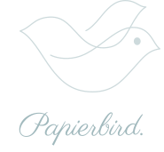

crafts ideas
from paper to digital
and delivers your messages
to the audience by the weaving of
research, creativity, imagination
and design.
Visit online portfoliofrom paper to digital
and delivers your messages
to the audience by the weaving of
research, creativity, imagination
and design.